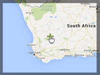

Example of moving the map, at the approach of a 3D marker to the map border.
Requirement: 3D Control
Usage instructions:
Add this script to map GameObject.
Drag the marker.
Add this script to map GameObject.
Drag the marker.
DragMarkerAndTranslateMapExample.cs
/* INFINITY CODE 2013-2016 */
/* http://www.infinity-code.com */
using UnityEngine;
namespace InfinityCode.OnlineMapsExamples
{
[AddComponentMenu("Infinity Code/Online Maps/Examples (API Usage)/DragMarkerAndTranslateMapExample")]
public class DragMarkerAndTranslateMapExample : MonoBehaviour
{
/// <summary>
/// Prefab of 3D marker.
/// </summary>
public GameObject prefab;
/// <summary>
/// The minimum speed of movement map.
/// </summary>
public float minSpeed = 0;
/// <summary>
/// The maximum speed of movement map.
/// </summary>
public float maxSpeed = 1;
/// <summary>
/// Relative edge of map (0-1).
/// </summary>
public float edge = 0.1f;
private void Start()
{
// Create a new 3D marker.
OnlineMapsMarker3D marker = OnlineMapsControlBase3D.instance.AddMarker3D(OnlineMaps.instance.position,
prefab);
// Subscribe to OnDrag event.
marker.OnDrag += OnMarkerDrag;
}
private void OnMarkerDrag(OnlineMapsMarkerBase marker)
{
// Stores the coordinates of the boundaries of the map.
Vector2 tl = OnlineMaps.instance.topLeftPosition;
Vector2 br = OnlineMaps.instance.bottomRightPosition;
// Fix 180 meridian.
Vector2 dist = tl - br;
dist.x *= -1;
if (dist.x < 0) dist.x += 360;
Vector2 scale = dist * edge;
// Calculates offset of map.
Vector2 offTL = marker.position - tl;
Vector2 offBR = marker.position - br;
offTL.y *= -1;
offBR.x *= -1;
if (offTL.x < 0) offTL.x += 360;
if (offBR.x < 0) offBR.x += 360;
Vector2 mapOffset = new Vector2();
if (offTL.x < scale.x) mapOffset.x = -offTL.x * Mathf.Lerp(minSpeed, maxSpeed, 1 - offTL.x / scale.x);
if (offTL.y < scale.y) mapOffset.y = offTL.y * Mathf.Lerp(minSpeed, maxSpeed, 1 - offTL.y / scale.y);
if (offBR.x < scale.x) mapOffset.x = offBR.x * Mathf.Lerp(minSpeed, maxSpeed, 1 - offBR.x / scale.x);
if (offBR.y < scale.y) mapOffset.y = -offBR.y * Mathf.Lerp(minSpeed, maxSpeed, 1 - offBR.y / scale.y);
// If offset not equal zero, then move the map.
if (mapOffset != Vector2.zero) OnlineMaps.instance.position += mapOffset;
}
}
}